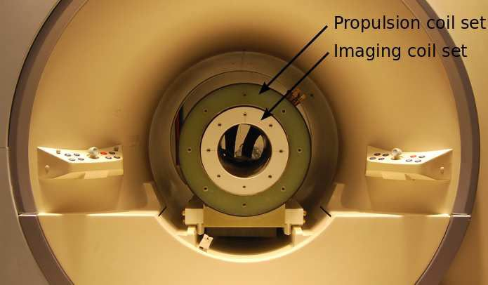

Magnetic navigation · polymtl_gosselin2011
MRN platform
MRI-based magnetic resonance navigation platform steering bead-tipped catheters and guidewires with added gradient coils

1 / 4


- Family
- Magnetic navigation (magnetic-navigation)
- Devices
- 2.5 Fr catheter (FasTracker 018, Boston Scientific) with two 0.9 mm chrome-steel beads 1.6 mm apart (vonthron2011_mri Sec. VII-A); guidewire with a magnetic bead at its tip (lalande2015_vivo abstract)
- Degrees of freedom
- 3D gradient force on the tip bead (three propulsion gradient axes, vonthron2011_mri Sec. IV)
- Push
- Magnetic
- Twist
- Field direction
- Tested up to
- Animal
- Sim-to-real
- None found — No simulation-trained controller found for this robot.
Testing
- Highest level
- Animal
- What was tested
- 2 rabbits: selective catheterization of right and left renal arteries successful and reproducible, SMA and iliac feasible, no inadvertent side-branch entry when advanced without actuation (lalande2015_vivo abstract); catheter deflection in a water bath for gradients -400 to +400 mT/m in Maxwell coils and in the propulsion insert (vonthron2011_mri Sec. VII-A, Figs. 5-7)
- Key numbers
- propulsion insert up to 450 mT/m in three directions; minimum coil rise time 20 ms; clinical imaging gradients about 20 mT/m effective (40 mT/m nominal) on a Siemens Sonata (vonthron2011_mri Sec. III-IV)
Mechanism
- Push (translation)
- magnetic (gradient-force steering of the tip); advance N.R. in the abstract (manual per li2020_magnetic Sec. 4.1: 'blindly controlled' between tracking sequences)
- Twist (rotation)
- gradient direction of the added coils
- Device range
- N.R.
- Target anatomy
- selective catheterization of aortic branches (renal, superior mesenteric and iliac arteries) in rabbits (lalande2015_vivo abstract)
Sensing and interface
- Force sensing
- none
- Leader and haptics
- no
- Imaging
- MRI tracking sequence interleaved with propulsion (imaging and propulsion mutually exclusive, vonthron2011_mri Fig. 3); MRA roadmap and dedicated tracking (lalande2015_vivo abstract)
- Sterility
- N.R.
Size
- Footprint (mm)
- N.R. (coil insert inside a clinical 1.5-T bore, vonthron2011_mri Fig. 2)
- Mass (kg)
- N.R.
Simulation
- Simulation model
- none found
- Sim-trained controller
- none found
Versions
- Lineage
- 2011: catheter with ferromagnetic spheres steered by MRI gradients, deflection characterised (gosselin2011_characterization, review-only); MRN platform with a propulsion and imaging coil insert in a 1.5-T Siemens Sonata (vonthron2011_mri); 2015: guidewire with a ferromagnetic bead steered in 2 rabbits (lalande2015_vivo, abstract)
Sources
- A MRI-based integrated platform for the navigation of micro-devices and microrobots · 2011 IEEE/RSJ International Conference on Intelligent Robots and Systems, 2011 · doi:10.1109/iros.2011.6094721 [vonthron2011_mri]
- In vivo demonstration of magnetic guidewire steerability in a MRI system with additional gradient coils · Medical Physics, 2015 · doi:10.1118/1.4906194 [lalande2015_vivo]
- Characterization of the deflections of a catheter steered using a magnetic resonance imaging system · Medical Physics, 2011 · doi:10.1118/1.3622599 [gosselin2011_characterization]
- A review of magnetic actuation systems and magnetically actuated guidewire- and catheter-based microrobots for vascular interventions · Intelligent Service Robotics, 2020 · doi:10.1007/s11370-020-00311-0 [li2020_magnetic]
Notes
- Notes
- Family: magnetic. The group's untethered MRN (1.5 mm sphere in a swine carotid) is out of scope. Lalande 2015 and Gosselin 2011 are Med. Phys. (Wiley): manual list; Lalande Fig. (in vivo setup) would be the better picture.
This record
- Read level
- full — full (vonthron2011_mri); abstract (lalande2015_vivo); review-only (gosselin2011_characterization via li2020_magnetic Sec. 4.2)
- Picture
- vonthron2011_mri Fig. 2 ↗ — licence: publisher copyright; grade C
- Picture changes
- native extract from vonthron2011_mri-platform_IROS.pdf p. 3; no crop; none upscaled
- Found by
- actuated-tip: Search of actuated-tip and magnetic devices.
- Data
- JSON · YAML:
records/robots/polymtl_gosselin2011.yaml - Correction
- Suggest a correction [repository not created yet]